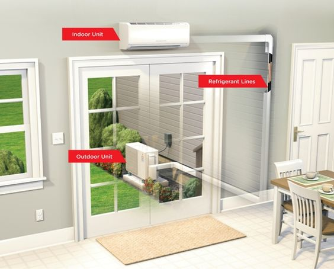
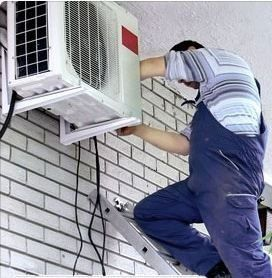

Монтаж и обслуживание
Монтаж кондиционеров.
Наша организация выполняет монтаж бытовых и полупромышленных кондиционеров по Киеву и Киевской области.
Алгоритм проведения монтажных работ сплит систем, мульти сплит систем, кассетных кондиционеров,
канальных кондиционеров и другого климатического оборудования состоит из нескольких этапов:
1) на первом этапе наши специалисты выезжают на объект заказчика для исследования помещений объекта:
-
расчета необходимой тепло и хладо производительности оборудования – это требуется для определения состава
оборудования, комплектующих и расходных материалов. Для этого необходимо учесть объем комнат, толщину стен
и материалы утеплителя, площадь окон и постоянно открытых проемов, учесть расположение помещения относительно
южной и северной стороны дома, если это мансардное помещение необходимо взять во внимание материал перекрытия и
теплоизоляции, состав электрического оборудования, что будет находится, или уже находится в помещении
(компьютеры, холодильники и прочее оборудование, что выделяет тепло) – все эти факторы влияют на теплопритоки
и теплопотери, и необходимы для расчета теплового баланса.
-
определения мест расположения внутренних и внешних блоков кондиционеров и оптимальный подвод фреоновой и
дренажной трассы, с учетом пожеланий заказчика. Производится замер длинны магистралей, фиксируется объём работ
по прокладке закладке трассы, количество необходимых отверстий под магистраль, места штробы для сокрытия
магистрали в стенах (если есть необходимость и возможность ее выполнить).
2) Далее производится калькуляция и предоставляется коммерческое предложение на поставку климатической техники
и работ по монтажу, мы стараемся предоставить предложение в максимально короткие сроки, как правило в тот же день.
На этом этапе мы понимаем какие диаметры медных и дренажных труб, сечение кабелей питания и управления будут
использоваться при монтаже – все расходные материалы используемые нашими специалистами являются высококачественными,
надежными и долговечными в эксплуатации.
3) На третьем этапе, после утверждения заказчиком состава оборудования, удовлетворенности ценовым предложением и
согласованием сроков, наши монтажники приступают к работам.
Pаботы могут быть так же разбиты на несколько этапов, например:
I - прокладка магистрали до выполнения ремонтных работ – мы закладываем магистрали и консервируем их
до момента когда будет закончен ремонт и мы сможем приступить к непосредственному монтажу внутренних
и наружных блоков кондиционеров.
II – работы по закладке магистралей, поставка кондиционеров, их монтаж, пуско-наладка и ввод в
эксплуатацию выполняются в один или несколько дней, в зависимости от объемов.
4) Мы также предлагаем услуги по обслуживанию кондиционеров
5) Наша компания берет на себя гарантийные обязательства по поставленному оборудованию и
выполненным работам при условии своевременного обслуживания системы кондиционирования.
Обращайтесь!

